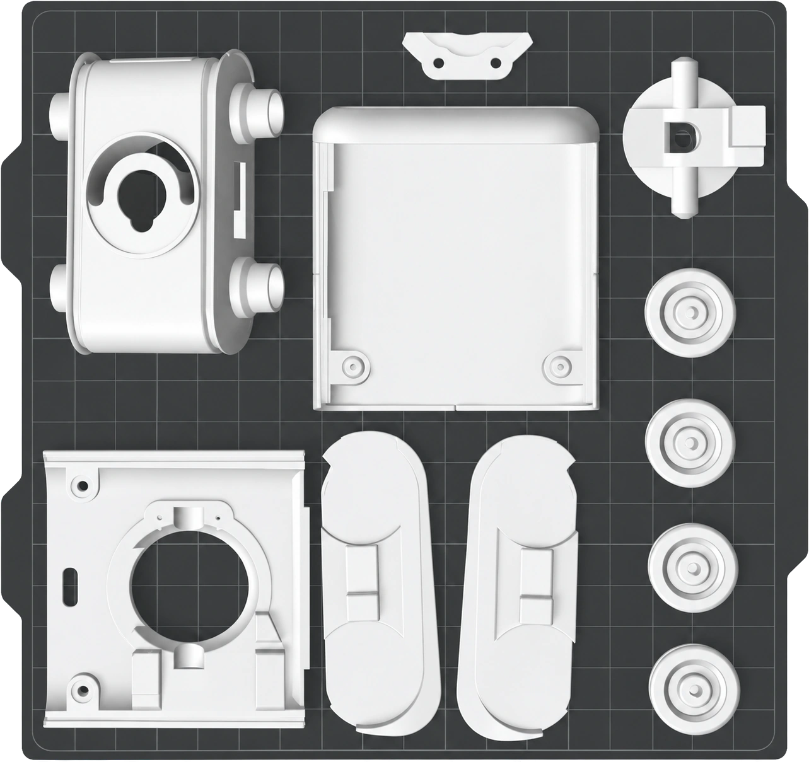

Documentation · Build
Build
Six items to buy, nine parts to print, fifteen steps to assemble. One evening, if the printer has been running while you were at work.
The one decision to make first is the electronics: solder four modules together yourself, or build the two Marvin PCBs — which are specified but not yet designed. It changes what you buy and five of the assembly steps. The choice is set out in Electronics.
Before you begin
Parts and tools
Everything except the printed parts and the front glass comes from Amazon or AliExpress. Nothing is exotic and nothing is a kit.
Every build
| Qty | Part | Specification |
|---|---|---|
| 2 | Mini servo | SG90, 180°, plastic gears |
| 2 | N20 gear motor | 3–6 V, 52–104 rpm, with leads |
| 4 | Brass sleeve bearing | 8 mm bore × 10 mm OD × 12 mm long |
| 2 | Display | Naked 1.14″ ST7789 panel, 0.5 mm-pitch FPC tail |
| 1 | Pre-crimped cable | 6-core flexible silicone ribbon, 6-pin JST-SH 1.0 mm |
| 1 | LiPo battery | 1000 mAh, 20 × 10 × 50 mm, JST-PH 2.0 mm |
The displays and the pre-crimped cable belong to the PCB build — the displays plug into the main board's FPC connectors, and the cable is the harness across the neck. The hand-soldered sequence below does not install either.
Hand-soldered build only
| Qty | Part | Specification |
|---|---|---|
| 1 | ESP32-C3 SuperMini | Or any other ESP32 with BLE |
| 1 | DRV8833 module | Dual H-bridge motor driver board |
| 1 | Lithium charger module | USB-C, 4.2 V — the ultra-mini boards are the right size |
| 1 | Step-up converter | DC-DC to 5 V, ≥ 1.5 A |
PCB build only
Two boards — one for the head, one for the base. They have not been designed yet. The specification is in Electronics.
Tools — every build
- Screwdriver
- A mini driver that fits the screws shipped with the servos. It also has to reach down the neck opening
- Pliers
- Mini electronics pliers, for trimming the servo horn
Tools — hand-soldered build only
- Iron
- Any temperature-controlled soldering iron with a fine tip
- Solder
- Thin leaded or lead-free wire, whichever you are used to
- Wire
- Stranded hook-up wire, around 26 AWG. You will use less than a metre
Screws and horns come in the bag taped to every SG90 servo — the sequence below uses the double-sided horn, the single-sided horn, and four of the small screws. No separate fastener kit is needed.
Make the parts
Eight parts in PLA, all on one plate, plus the track links in a flexible filament. The repository carries sliced projects, so on a Bambu machine there is nothing to arrange.
Parts to print
| # | Part | Qty | Material | Supports |
|---|---|---|---|---|
| 01 | Body / chassis | 1 | PLA | Tree |
| 02 | Track cover, left | 1 | PLA | No |
| 03 | Track cover, right | 1 | PLA | No |
| 04 | Wheel | 4 | PLA | Normal |
| 05 | Head base | 1 | PLA | Normal |
| 06 | Head cover | 1 | PLA | Normal |
| 07 | Neck | 1 | PLA | Tree |
| 08 | Neck mount | 1 | PLA | No |
| 09 | Track link | many | TPU | — |
The support column is taken from the sliced projects, where it is set per object. Part 09 is the only one that genuinely needs a flexible filament, and it is not on the shared plate — its quantity is not yet confirmed against the assembly.
The face plate is not yet exported as a mesh. It is the last gap in the printed set.
Print settings
- Material
- PLA — TPU for the track links
- Nozzle
- 0.4 mm
- Layer height
- 0.20 mm
- Walls
- 3
- Infill
- 15 % grid
- Supports
- Per part, as in the table opposite. Tree on the body and neck; normal on the wheels, head base and head cover
- Brim
- Automatic
These are the settings in the sliced projects, not measured optima — nobody has yet printed the full set twice on two different machines. If you do, report what worked.
Files 02.5 — What to download
- Bambu A1 mini
- 3d_print/marvin_BambuLab_A1_Mini.3mf
- Bambu X1C
- 3d_print/marvin_BambuLab_x1C.3mf
- Any slicer
- 3d_print/marvin_generic_printer.3mf
- Meshes
- stl/01_body.stl … 09_track.stl
All of it is under mechanical/ and tracked through Git LFS — run git lfs install before cloning, or you will get pointer files instead of geometry. Every file and its format.
FDM or SLS
Print it in PLA on the machine you own — that is what the parts are dimensioned for, and what the sliced projects are set up for.
If you want the object rather than the prototype, have the set printed in white PA12 by an SLS service. Same geometry, no layer lines, no supports to pick out of the neck.
The face
Print the face plate in black PLA. It is the only part that wants a second colour, and it is the part everybody looks at.
The finished version is laser-cut, screen-printed glass, and it is the one part of Marvin that needs a contract manufacturer — see Electronics.

Put it together
Assemble
Bottom up: bearings, motors, wheels, then the neck, then the head. The two electronics paths share every mechanical step and differ in five — pick one and the sequence renumbers itself.
Four modules, soldered together with wire and tucked into the chassis. This is the build in the videos. Wiring diagram.
Two boards, a harness through the neck, and the displays behind the face. Nobody has built this yet, because the boards do not exist. Specification.
-
Print and clean the parts
Take the supports out and deburr every seat and bore before anything is pressed into them. A support witness mark inside a bearing seat is the reason a bushing will not go home in the next step.
-
Press the four bushings into the base
Push each brass bushing all the way in until it reaches the end of its seat. One left standing proud will bind its shaft, and you will not find out until the tracks are on.
-
Fit the two gear motors
Enter at an angle, shaft first, then swing the body of the motor down into its pocket.
-
Fit the two idler wheels
The two that are not driven, on the bushings you pressed in.
-
Fit the two driven wheels
Line the flat of the D-shaped motor output shaft up with the D-shaped bore in the wheel before you press. Forced round, the flat rounds off, and the wheel then turns on a shaft that is still turning underneath it.
-
Seat the pan servo
The head-rotation servo drops into its seat in the body.
-
Connect the motors, the servo and the harness to the base board
PCB buildBoth DC motor leads, the pan servo lead and the pre-crimped cable go into their connectors on the board — while you can still see all three.
-
Install the base board and its cover
PCB build -
Prepare the neck
Take the double-sided horn from the servo's own bag and shorten each wing to 5 mm with the pliers. Trimmed, it fits the opening in the bottom of the neck — fit it the way round that will let the horn, once it is in the neck, slide onto the servo shaft. Two of the servo's screws hold it there.
-
Drop the neck screw in from the top
A mini screw into the central opening of the neck, from above. It sits there loose for the next two steps, so keep the neck upright.
-
Route the motor and servo wires up through the neck
Hand-solderedBoth DC motor leads and the pan servo lead, fed in from underneath. Watch that the screw does not fall out while you do it.
-
Route the harness up through the neck
PCB buildThe pre-crimped six-core cable, fed in from underneath. Watch that the screw does not fall out while you do it.
-
Set the neck on the body and tighten it down
Position the neck on the body with the face turned forward. Put the screwdriver down through the opening in the top and tighten until the neck is held and still free to rotate. That screw is what clamps the neck onto the pan servo's shaft, which is why the face has to be pointing the right way before it goes tight.
-
Seat the tilt servo in the head base
Into its seat, held with one of the screws from the servo's bag.
-
Fit the single-sided horn to the tilt servo
Secured with its own screw, and positioned so that it interlocks with the matching feature in the neck. That coupling is the whole of the head tilt.
-
Solder the electronics
Hand-solderedFour modules and six signal lines. The wiring diagram, the pin assignments and the three things that catch people out are in Electronics.
-
Install the main board, the displays and the battery
PCB buildAll three go into the head, and the pre-crimped cable you routed up the neck plugs into the main board.
-
Install the face
The face plate, printed in black PLA — or the screen-printed glass, if you have had one made.
-
Install the head cover
Which is the point at which it stops being a mechanism and starts looking back at you.
What this section still needs
Pictures, time and torque
The words are written; the pictures are not. One drawing per step would make this sequence work without reading it at all, which is the standard to aim at. The other gap is time and torque: how long each step actually takes, and which screws want how much of it.
If you build one, photograph each stage as you go. Photographs are a perfectly good first version of a drawing.
Send a setInstall the firmware
Flash
Requires PlatformIO. Connect the board over USB and run the flash script from the repository root.
$ cd firmware && ./flash.sh
Then open a serial monitor at 115200 baud. You get a prompt:
Marvin> R120
Type a command and the head moves. Bluetooth advertising starts automatically under the name Marvin; you do not need to enable anything.
The firmware ships configured for the ESP32-C3 of the hand-soldered build. Every pin lives in config.h, so a different board is a configuration change.
First checks
- Tracks still. If they lurch at power-up, the motor pins floated — reflash.
- R90 then T57. The head should centre smoothly, not snap.
- M80, then S. Both tracks forward, then stop.
- D. Demo mode. Put it on the floor first.
Use Marvin
First drive
Serve the controller app, open it in Chrome or Edge, and pick Marvin from the device picker. One thing trips up nearly everyone:
It must be served, not opened
Web Bluetooth only works in a secure context. Open the file with file:// and the Bluetooth API is simply undefined — the Scan button does nothing at all.
$ cd controller && ./serve.sh # then http://localhost:3000
Continue to Drive: the command language, the app, and what it does when left alone